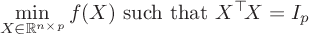
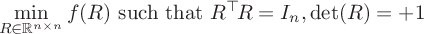
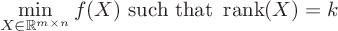
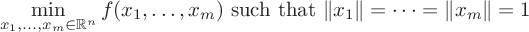
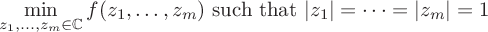

Manopt
A matlab toolbox for optimization on manifolds
What is this?
Manopt is a Matlab
toolbox to solve
optimization problems on manifolds. For
basic use, one only needs to pick a manifold, provide the cost function
(and possibly its derivatives) and pass it all on to a solver.
Accompanying tools help the user in common tasks such as numerically
checking whether the objective function agrees with its derivatives up
to the appropriate order.
Why did we make it and what is it good for?
Optimization on
manifolds is a powerful paradigm to address nonlinear, nonconvex
optimization problems that arise naturally in applications. With
Manopt, it is easy to write code that solves problems of these various
forms (and variations thereof):
Depending on the availability of derivatives for the objective function, a number of optimization algorithms can be used:
| Unconstrained optimization |
| Unit Frobenius norm constraint (sphere) |
 |
| Orthonormality constraint (Stiefel manifold) |
|  |
| Optimization of rotations (special orthogonal group) |
|  |
| Fixed-rank constraint |
|  |
| Optimization of subspaces (Grassmann manifold) |
| Unit norm constraints (oblique manifold) |
|  |
| Unit modulus constraints for complex numbers |
|  |
Depending on the availability of derivatives for the objective function, a number of optimization algorithms can be used:
- Smooth optimization
- Riemannian steepest-descent
- Riemannian trust-regions
- Nonsmooth optimization
- (we are working on it)
- Derivative-free optimization
- Riemannian Nelder-Mead
- Riemannian particle swarm optimization (PSO)
Who are we?
Manopt is
developed and maintained at UCLouvain in the mathematical engineering department.